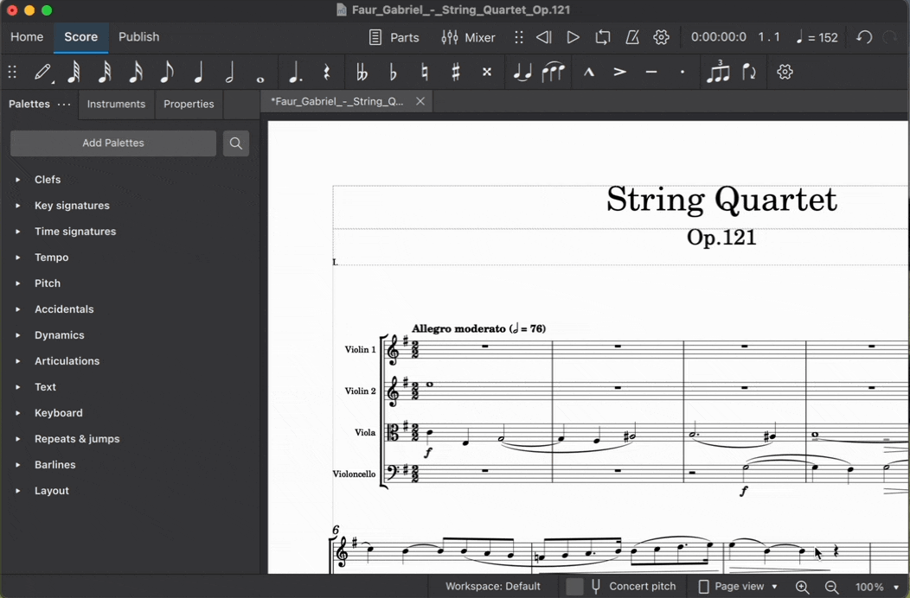

浏览乐谱
滚动
鼠标滚轮
- 使用滚轮上下移动视图。
- 使用 Shift 加滚轮左右移动视图。
- 使用 Ctrl 加滚轮放大和缩小。
滚动条
滚动条出现在乐谱视图的右边缘和底边缘。单击并拖动它们可以快速上下或左右移动乐谱视图。滚动条通常被隐藏，但将鼠标悬停在乐谱视图边缘即可显示出来。

键盘
您还可以使用键盘上的 PgUp、PgDn、Home 和 End 键滚动乐谱。如果您的键盘没有这些功能的专用按键，大多数系统还允许您按住 Fn 或类似键，然后分别按 Up、Down、Left 或 Right 来访问这些功能。
单独按 PgUp 和 PgDn 每次滚动一屏。这可能小于乐谱的实际一页。如果在按 PgUp 或 PgDn 时按住 Ctrl（Mac：Cmd），则每次移动一整页。
元素导航
当乐谱中选中了单个元素时，它会充当光标。您可以使用常用键盘快捷键更改选择，从而移动光标。
Left 和 Right 键将每次一个和弦或休止符地在乐谱中水平移动。如果在按 Left 或 Right 时按住 Ctrl（Mac：Cmd），则可以一次导航一整小节。
要垂直移动光标以访问乐谱中的各种音符、声部和谱表，请使用快捷键 Alt+Up 和 Alt+Down（Mac：Option+Up 和 Option+Down）。
您还可以使用快捷键 Alt+Left 和 Alt+Right（Mac：Option+Left 和 Option+Right）来选择音符或休止符以外的元素。这些命令使您可以仅使用键盘选择几乎任何元素，包括演奏记号、小节线、力度变化线等。
此外，Ctrl+Home（Mac：Cmd+Home）将选中乐谱中的第一个元素，而 Ctrl+End（Mac：Cmd+End）将选中最后一个元素。同样，对于没有专用 Home 和 End 键的键盘，大多数系统分别提供 Fn+Left 和 Fn+Right 作为替代。
请参阅默认键盘快捷键以了解更多信息。
导航器
导航器是一个显示乐谱页面缩略图的面板。要显示或隐藏导航器，请单击 视图 → 导航器。

蓝色边框表示乐谱视图中当前处于焦点的乐谱区域。单击该框并拖动它即可在乐谱中移动。
时间线
一种显示乐器和乐谱结构的导航辅助工具。有关详细信息，请参阅时间线。
视图
您可以使用状态栏右侧的弹出菜单在不同乐谱视图之间切换。

页面视图
乐谱按打印或导出为 PDF 或图片文件时将呈现的样子显示：即逐页显示，并带有页边距。MuseScore 会根据在页面设置和样式中进行的设置自动应用系统（行）分页和分页符。此外，您还可以应用自己的系统（行）、页面或乐段分页符。
连续视图（水平）
乐谱显示为一条不间断的系统。即使起始点不在视图中，小节编号、乐器名称、谱号、拍号和调号也始终显示在窗口左侧。
连续视图（垂直）
乐谱显示为带有页眉但没有页边距、页面高度无限的单个页面。系统（行）分页会根据页面设置和样式中的设置自动添加。此外，您还可以应用自己的系统（行）或乐段分页符。
缩放
有几种方法可以放大或缩小乐谱：
放大
Ctrl++（Mac：Cmd++）\ 或在按住 Ctrl（Mac：Cmd）的同时用鼠标滚轮向上滚动。
缩小
Ctrl+-（Mac：Cmd+-）\ 或在按住 Ctrl（Mac：Cmd）的同时用鼠标滚轮向下滚动。
状态栏缩放控件
要从状态栏控件放大和缩小乐谱：
- 单击状态栏右侧区域的放大镜图标
- 单击这些图标右侧的数字字段，然后输入自定义缩放级别
- 在最右侧的弹出列表中选择一个预设缩放级别

恢复 100% 缩放
这会将缩放恢复为默认（100%）级别。
Ctrl+0（Mac：Cmd+0）
查找/转到
查找/转到面板使您可以快速导航到乐谱中的特定小节、排练标记或页码。
要显示该面板：
- 转到 编辑 → 查找，或
- 按 Ctrl+F（Mac：Cmd+F）。
要隐藏该面板：
- 单击面板左侧的 X（关闭）按钮，或
- 在面板获得焦点时按 Esc。
导航到编号小节
输入小节编号（从 1 开始计数每一小节，不考虑弱起小节、乐段分页符或对小节编号偏移量的人工更改）。
导航到编号页面
使用 pXX 格式输入页码（其中 XX 是页码）。
导航到数字排练标记
使用 rXX 格式输入编号（其中 XX 是排练标记的编号）。
导航到字母排练标记
输入排练标记的名称（搜索不区分大小写）。
专业提示！ 最好避免用单个字母“R"、“r"、“P”、“p" 或这些字母之一加一个整数（例如“R1”或“p3”）来命名排练标记，因为这可能会混淆搜索算法。